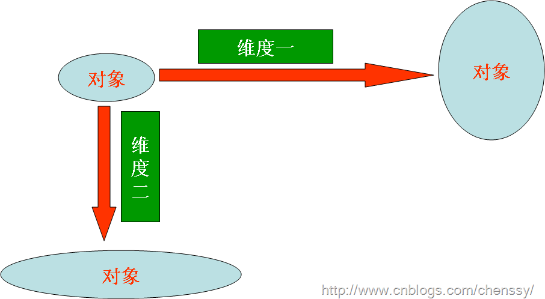

Javaを学び始めたとき、先生が継承について説明するとき、いつも一つの例を使って説明していました。それは絵を描くことです。ここにペンがあり、正方形、長方形、円を描くことができます（これは誰でもやり方を知っていますよね、説明は省略します）。しかし今度はこれらの図形に色を塗る必要があります。ここには白、灰、黒の3色があります。ここで3*3=9種類の図形を描けます。白い正方形、白い長方形、白い円……ここまで来て、ほぼみんなここに2つの解決策があることを知っています。
- 解決策1：それぞれの図形に様々な色のバージョンを提供する。
- 解決策2：実際のニーズに応じて色と図形を組み合わせる。
もし解決策1を採用して実装するなら、こう理解することもできるのではないでしょうか？それぞれの色に様々な図形のバージョンを提供するということです。それは完全に可能です。以下の通りです。

この2つの図形について、私たちは皆こういう問題をはっきりと認識しています。もし楕円を追加するなら、また3つの色を追加しなければならないのでしょうか？そしてもし緑色を追加するなら、4つの図形を追加しなければなりません。さらに追加し続けると……追加のたびにいくつかのクラスが増えます（色を追加すると図形の数だけクラスが増え、図形を追加すると色の数だけクラスが増えます）。こんな状況は、どのプログラマーも望まないでしょう！それでは解決策2を見てみましょう。解決策2が提供する解決方法は、色用と図形用の2つの親クラスを用意し、色の親クラスと図形の親クラスの両方に対応するサブクラスを含め、必要に応じて色と図形を組み合わせるというものです。

複数の変化する次元がある場合、通常は解決策2を採用して実装します。これにより、システム内のクラス数を減らすだけでなく、システムの拡張にも有利です。解決策2の応用をブリッジパターンと呼びます。

一、パターン定義
ブリッジパターンは、抽象部分とその実装部分を分離し、それらを独立して変化させられるようにします。
ブリッジパターンは継承関係を関連関係に変換し、クラス間の結合度を低減し、システム内のクラスの数を減らし、コード量も減らします。
「抽象部分とその実装部分を分離する」という言葉は分かりにくいかもしれません。実はこれは抽象クラスとその派生クラスを分離することではなく、抽象クラスとその派生クラスが自分自身のオブジェクトを実装するために使うことです。それでも理解できないなら、まず抽象化とは何か、実装化とは何か、脱耦（デカップリング）とは何かをはっきりさせましょう。
抽象化：その概念は、複雑な物体の1つまたはいくつかの特性を取り出して、他の特性だけに注意を向ける行動またはプロセスです。オブジェクト指向では、オブジェクトの共通の性質を抽出してクラスを形成するプロセスです。
実装化：抽象化に対して与えられる具体的な実装です。抽象化とは逆のプロセスであり、実装化は抽象化されたものをさらに具体化することです。
脱耦（デカップリング）：脱耦（デカップリング）とは、抽象化と実装化の間の結合を解き放つこと、あるいはそれらの間の強い関連を弱い関連に変え、2つの役割間の継承関係を関連関係に変えることです。
あの言葉「抽象部分とその実装部分を分離する」を『大話設計模式』の内容に当てはめると、実装システムには複数の角度の分類があり得て、それぞれの角度が変化し得るので、その多角的な分類を分離して独立して変化させ、それらの間の結合を減らすということです。
ブリッジパターンにおけるいわゆる脱耦（デカップリング）とは、ソフトウェアシステムの抽象化と実装化の間で継承関係ではなく関連関係（コンポジションまたは集約関係）を使用し、それによって両者が比較的独立して変化できるようにすることです。これがブリッジパターンの意図です。
二、パターン構造
下図はブリッジパターンのUML構造図です。

ブリッジパターンは主に以下のいくつかの役割を含みます。
- Abstraction：抽象クラス。
- RefinedAbstraction：拡張抽象クラス。
- Implementor：実装クラスインターフェース。
- ConcreteImplementor：具体的な実装クラス。
三、パターン実装
パターンのシナリオは、あの絵を描く例を採用します。そのUML構造図は以下の通りです。
 まずは形状クラスです。このクラスは抽象クラスで、主に図形を描くメソッドを提供します。Shape.java:
まずは形状クラスです。このクラスは抽象クラスで、主に図形を描くメソッドを提供します。Shape.java:
実例
次に3つの図形です。
円形 Circle.java:
実例
長方形 Rectangle.java:
実例
正方形 Square.java:
実例
色インターフェース Color.java:
実例
白色 White.java:
実例
灰色 Gray.java:
実例
黒色 Black.java:
実例
クライアント Client.java:
実例
実行結果：
白い正方形
四、パターンの長所と短所
長所
- 1、抽象インターフェースとその実装部分を分離します。継承よりも優れた解決策を提供します。
- 2、ブリッジパターンはシステムの拡張性を高めます。2つの変化する次元のいずれかを拡張しても、元のシステムを修正する必要はありません。
- 3、実装の詳細はクライアントに対して透過的であり、ユーザーに実装の詳細を隠すことができます。
短所
- 1、ブリッジパターンの導入はシステムの理解と設計の難易度を高めます。集約関連関係が抽象層に構築されるため、開発者は抽象に対して設計とプログラミングを行う必要があります。
- 2、ブリッジパターンはシステム内の2つの独立して変化する次元を正しく識別することを要求するため、その使用範囲には一定の限界があります。
五、パターンの使用シーン
- 1、システムがコンポーネントの抽象化役割と具体化役割の間により多くの柔軟性を追加する必要がある場合、2つのレベル間で静的な継承関係を構築することを避け、ブリッジパターンによって抽象層に関連関係を構築できます。
- 2、継承を使用したくない、または多層継承によってシステムのクラス数が急激に増加するシステムに対して、ブリッジパターンは特に適しています。
- 3、クラスに2つの独立して変化する次元が存在し、その両方の次元を拡張する必要がある場合。
六、パターンのまとめ
- 1、ブリッジパターンは抽象化と実装化の脱耦（デカップリング）を実現します。両者は互いに独立しており、互いに影響を与えません。
- 2、2つの独立して変化する次元には、ブリッジパターンを使うのが最適です。
- 3、「具体的な抽象クラス」に対して行った変更は、クライアントに影響を与えません。
原文アドレス：https://www.cnblogs.com/chenssy/p/3317866.html
原文アドレス：https://www.cnblogs.com/chenssy/p/3317866.html
クリックしてノートを共有
ノートはこの記事の内容の拡張である必要があります！
記事投稿は、ここをクリック
登録招待コードの取得方法
ノートを共有する前にログインが必要です！
登録招待コードの取得方法